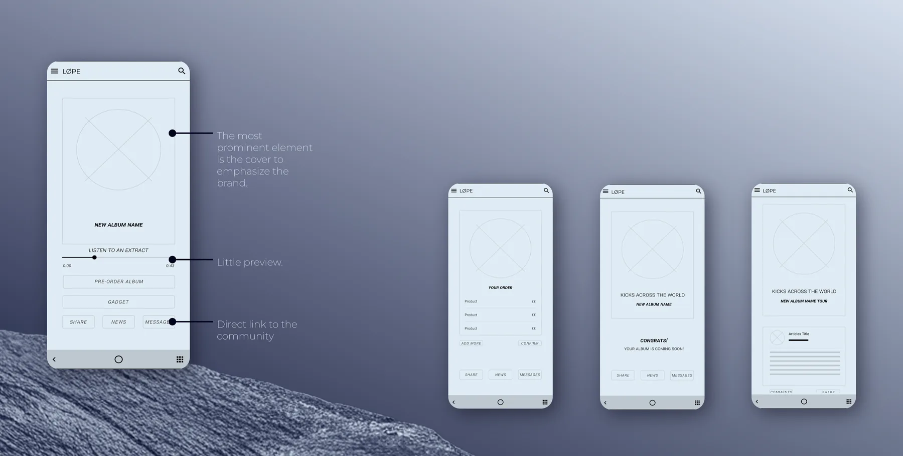
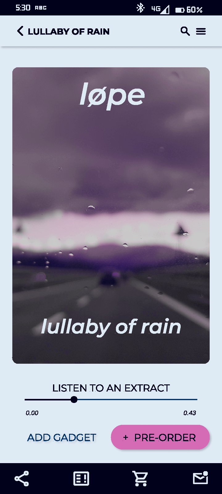
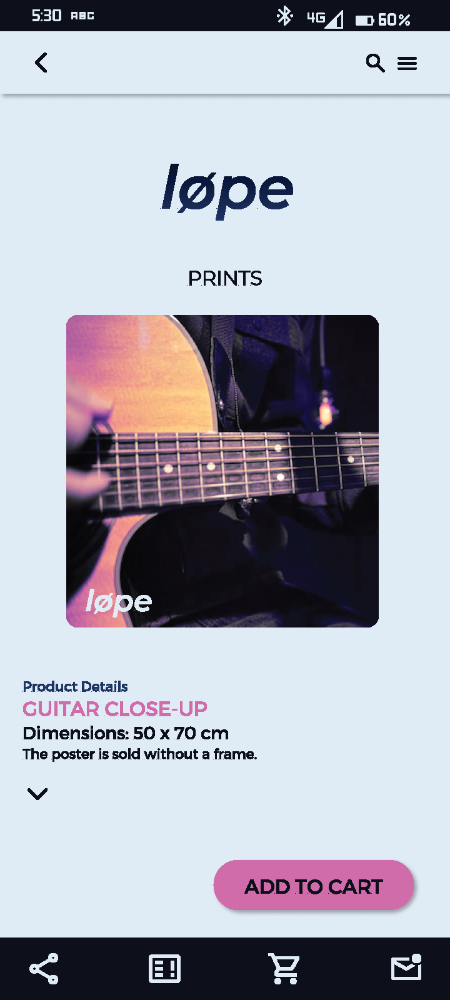
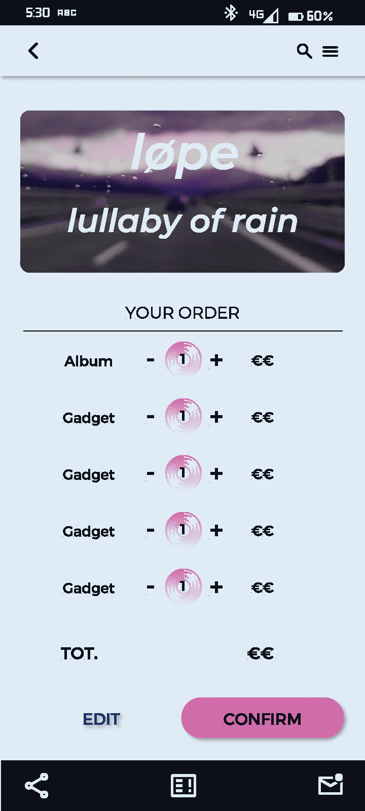
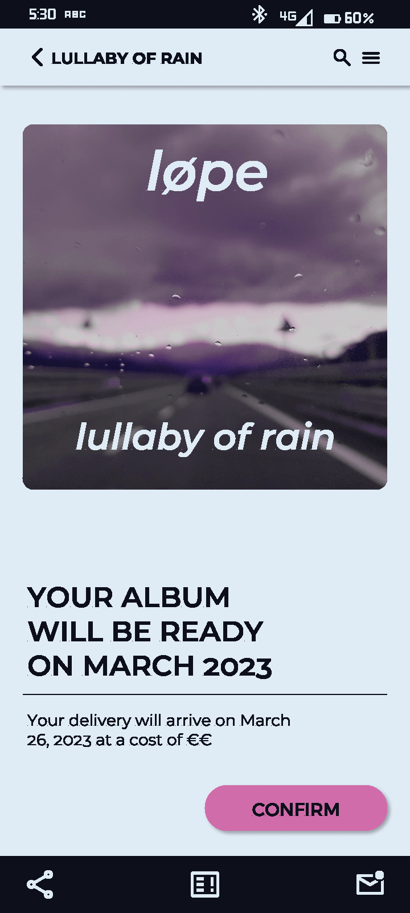
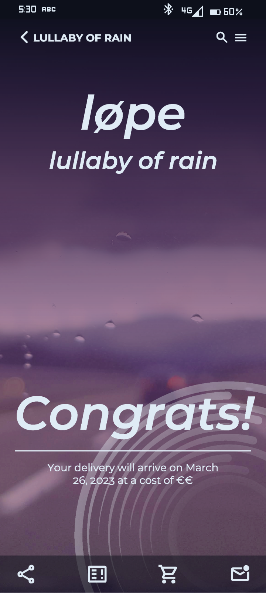
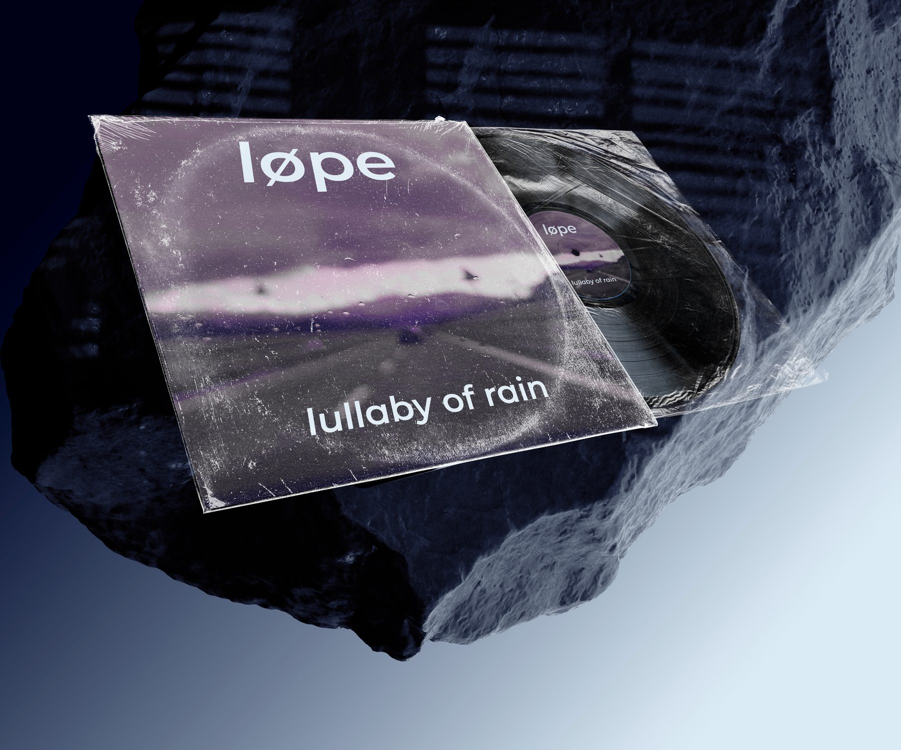
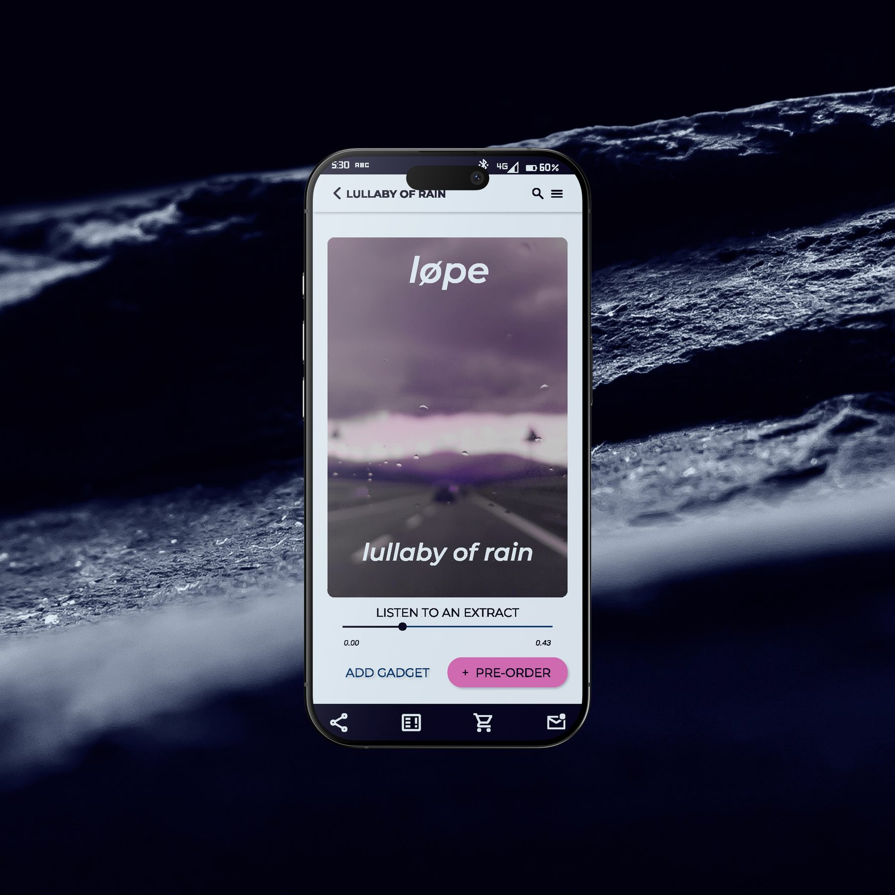

01 — Idea
Right now, an app like this gets used once — to pre-order the album — then forgotten. The goal: give fans a reason to keep opening it, with a space to talk about the band built into the app itself. Research was based on interviews: who the users are, and what would bring them back after the first purchase.

#02011C
#003268
#DFEBF4
#D66BB5
02 — Execution
The usability test changed the layout. Repeating the same button on every page annoyed most testers, so it moved into the app bar — breaking the symmetry to pull attention to the action. The rest stays minimal: very few elements, the album cover as a full background whenever possible.





03 — Outcome
Case study with an interactive Figma prototype.


